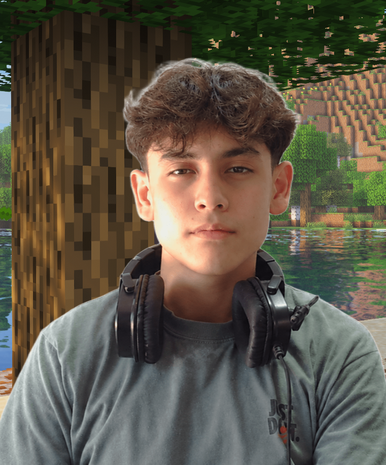

Student · Developer · Maker
Hi, I’m Joaquin.
I build things with code.
I’m a Paraguayan student interested in programming, robotics, mathematics, and making games—from software rendered pixel by pixel to learning tools in Guaraní.

Curious by natureGame development✳Robotics✳Creative coding✳Game development✳Robotics✳Creative coding✳
Things I’ve built
Browse my GitHub projects and experiments.
↗ 02 / PortfolioMy toolkit
Languages, creative tools, and hardware I use.
↗ 03 / AboutA little about me
My interests, background, and robotics experience.
↗ 04 / NowWhat I’m learning
Current projects and things on my desk.
↗ 05 / ContactLet’s connect
Find me and get in touch.
↗